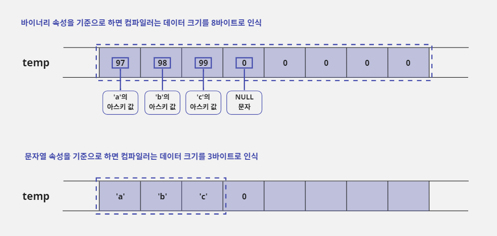
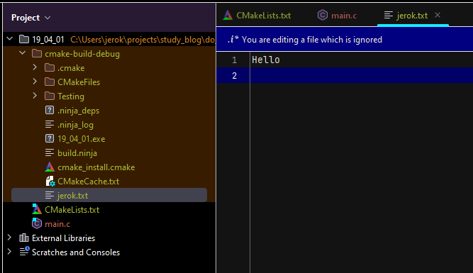
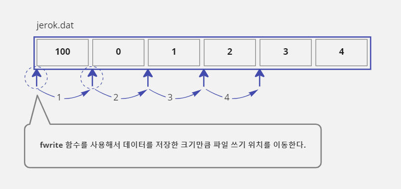

19. 파일 입출력
- 대부분의 프로그램은 사용자가 입력한 데이터를 계속 유지하기 위해 파일에 정보를 저장하는 기능을 제공하낟.
- 프로그램에서 사용하던 데이터를 어떻게 파일에 저장하는지, 그리고 저장된 파일에서 데이터를 어떻게 읽어 오는지에 대해 배워보자.
19-1. 표준 입출력 라이브러리
표준 입출력 라이브러리란?
- 컴퓨터의 주기억 장치인 램(RAM, Random Access Memory)은 컴퓨터의 전원이 켜져 있을 때만 데이터를 유지할 수 있다.
- 전원이 꺼져도 데이터를 유지할 수 있는 보조기억 장치(디스크, HDD, SSD)가 필요하다.
- 많은 프로그램이 사용자가 입력한 데이터를 보관하기 위해 보조기억 장치에 데이터를 저장하고 있다.
- 하지만 보조기억 장치의 종류가 너무 다양하기 때문에 프로그래머가 일일이 보조 기억 장치의 특성을 파악해서 프로그래밍한다는 것은 불가능하다.
- 그래서 운영체제는 보조기억 장치의 종류에 상관없이 같은 함수로 데이터를 저장할 수 있도록 파일 입출력 라이브러리를 제공하고 있다.
- 그런데 파일 입출력 라이브러리도 운영체제에 따라 조금씩 차이가 있다.
- 운영체제별로 제공하는 입출력 함수는 이름뿐만 아니라 사용법도 다르다.
- 윈도우 환경에서 파일 입출력 프로그래밍을 하다가 리눅스 환경에서 작업하게 되면 파일 입출력을 다시 공부해야 할 정도로 운영체제에 따라 차이가 있다.
- 이런 문제를 해결하기 위해 C 언어는 '표준 입출력 라이브러리'(Standard I/O Library)를 제공한다.
- 이 라이브러리를 사용하면 보조기억 장치에 파일 단위로 데이터를 저장하거나 읽을 수 있다.
- 그리고 많은 운영체제에서 이 라이브러리를 제공하기 때문에 호환성이 높다.
- 따라서 이 방식으로 파일 입출력을 배우게 되면 운영체제에 상관없이 같은 이름의 함수로 보조기억 장치를 사용하는 프로그램을 개발할 수 있다.
- 표준 입출력 라이브러리는 데이터의 형식에 따라 다른 함수를 제공한다.
- 프로그램이 사용하는 데이터 형식은 '텍스트(문자열)'와 '바이너리(이진)'로 나누어지는데, 자신이 다루는 데이터가 텍스트 형식이면 텍스트 관련 함수를 사용해야 하고, 바이너리 형식이면 바이너리 관련 함수를 사용해야 한다.
- 그래서 자신이 사용할 데이터가 어떤 형식의 데이터인지 구별할 줄 알아야 한다.
19-2. 텍스트 파일과 바이너리 파일
바이너리 속성과 문자열 속성
- 프로그램이 사용하는 데이터 속성은 크게 두 가지로 나눌 수 있다.
- 데이터에 다른 의미를 부여하지 않고 숫자 그 자체로 보는 바이너리(Binary) 속성과 숫자를 아스키(ASCII) 값으로 변환해서 사용하는 문자열(String, Text) 속성이다.
- 예를 들어 97이라는 데이터를 단순히 숫자 97이 들어 있는 1바이트 크기의 정보라고 처리하는 것이 바이너리 속성이고, 아스키 값 'a'로 처리하는 것이 문자열 속성이다.
- 데이터를 이해하는 기준에 따라 97을 처리하는 방법이나 결과 값이 달라진다.
- 다음과 같이 배열로 선언한 크기가 8바이트인
temp변수가 있다. temp변수에는"abc"문자열이 저장되어 있다.
/* 마지막 ,(쉼표) 이후의 값은 모두 NULL 문자를 의미하는 아스키 값으로 0으로 초기화됨 */
char temp[8] = { 'a', 'b', 'c', 0, };
- 먼저 바이너리 속성을 기준으로 하면
temp변수를 8바이트 크기 데이터로 생각하고 그 데이터에는 8개의 아스키 값97,98,99,0,0,0,0,0이 들어 있다고 생각한다. - 반면에 문자열 속성은
temp변수 크기에 별로 의미를 두지 않는다. - 그 대신
temp변수에 저장된 값을 아스키 값으로 생각하고temp변수에 저장된 값에서NULL문자인0(EOL, End Of Line)이 나올 때까지 찾는다. - 즉 문자열 속성을 기준으로 할 때는
temp변수의 네 번째 요소에서0을 찾ㄷ으면 데이터 크기가 3바이트고 데이터 내용은"abc"라고 생각한다.

두 속성의 차이점 살펴보기
- 데이터 속성에 따라 사용하는 기준이 다르기 때문에 코드를 작성할 때 각 속성별로 사용하는 함수가 다를 수밖에 없다.
변수에 저장된 데이터의 크기를 구할 때의 차이점
- 예를 들어
temp변수에 저장된 데이터의 크기를 구하는 경우에 바이너리 속성은 메모리의 크기를 구해야 변수의 크기를 구할 수 있기 때문에sizeof연산자를 사용한다.
int data_size = sizeof(temp); // 변수 크기를 구함. data_size에는 값 8이 저장됨
- 반면에 문자열 속성은
temp변수에 저장된 문자열의 길이를 구하면 변수의 크기를 구할 수 있기 때문에string.h에서 제공하는strlen함수를 사용하여 문자열 길이를 구한다.
int data_size = strlen(temp); // 문자열 길이를 구함. data_size에는 값 3이 저장됨
변수에 저장된 값을 다른 변수에 복사할 때의 차이점
- 바이너리 속성과 문자열 속성은
temp변수에 저장된 데이터를 다른 변수에 복사할 때도 서로 다른 함수를 사용한다. - 바이너리 모드는 변수에 들어 있는 값을 그대로 복사하는 개념을 사용하기 때문에
temp변수의 값을dest변수로 복사하려면memcpy함수를 사용한다. - 바이너리 속성은
mem으로 시작하는 함수를 사용한다.
char temp[8] = {'a', 'b', 'c', 0,};
char dest[8];
memcpy(dest, temp, sizeof(temp)); // temp에서 dest로 8바이트 크기만큼 메모리를 복사함
- 반면에 문자열 속성은
temp변수에 저장되어 있는 문자열만 복사하면 되기 때문에strcpy함수를 사용한다. - 문자열 속성은
str로 시작하는 함수를 사용한다.
char temp[8] = {'a', 'b', 'c', 0,};
char dest[8];
strcpy(dest, temp); // temp에서 dest로 4바이트 크기(NULL 문자 0까지 포함)만큼 복사한다
/// 문자열을 복사할 때는 temp에 NULL 문자 0이 나올 때까지 복사하므로 strcpy 함수를 호출할 때 복사할 길이를 적지 않는다
memcpy와strcpy함수를 비교해 보면strcpy가 더 간단하고 메모리를 복사하는 양도 적다.- 그래서 프로그램 효율이 더 좋다고 오해하는 경우가 있다.
- 하지만
memcpy는 특별한 체크나 데이터 가공 없이 메모리를 그대로 복사하는 함수이고strcpy는 내부적으로 문자를 하나 복사할 때마다 문자열이 끝이 났는지 제대로 된 문자인지를 계속 체크하면서 복사하는 함수이다. - 따라서
memcpy함수가strcpy함수보다 더 빠르게 동작할 수밖에 없다. - 결론적으로 어떤 속성을 사용할지를 결정하면 그에 맞는 함수를 사용해서 프로그래밍해야 원하는 결과를 얻을 수 있다.
- 그리고 어떤 속성을 사용하든지 데이터 자체가 변경되는 것이 아니라 데이터를 해석하는 개념이 달라지기 때문에 프로그램 개발 상황에 맞게 잘 판단해서 사용하면 된다.
바이너리 파일과 텍스트 파일
- 바이너리 속성 개념이 적용된 파일을 바이너리(Binary) 파일이라고 하며, 문자열 속성이 적용된 파일을 텍스트(Text) 파일이라고 한다.
- 보통 이미지 파일, 음악 파일, 동영상 파일, 실행 파일은 바이너리 파일로 구성되고 간단한 문서 파일이나 프로그램에서 사용하는 소스 파일은 텍스트 파일로 구성된다.
- 대부분의 프로그램이 바이너리 파일을 더 많이 사용하고 있다.
- 그 이유는 텍스트 파일보다 저장 방식이나 처리 효율이 더 좋기 때문이다.
- 그런데도 텍스트 파일이 공존하는 이유는 무엇일까?
- 바이너리 파일은 해당 파일을 사용할 수 있는 프로그램이 설치되어 있어야 제대로 사용할 수 있기 때문이다.
- 소스 파일과 같이 텍스트로 되어 있는 파일은 아스키라는 표준으로 파일이 이루어져 있기 때문에 시스템에 특별한 프로그램이 설치되어 있지 않아도 텍스트 파일에 적힌 문자열을 확인할 수 있다.
19-3. 파일 열기와 닫기
파일 입출력 함수의 도우미! FILE 구조체
- 표준 입출력 라이브러리를 사용하여 파일에 데이터를 저장하거나 읽는 방법에 대해 알아보자.
- 표준 입출력 라이브러리는 'FILE 구조체'로 포인터 변수를 선언하고 파일 입출력 함수를 호출할 때마다 이 변수를 넘겨주도록 만들어져 있다.
- FILE 구조체는 사용하려는 디스크(DISK)상의 파일이 어떤 상태로 사용 중인지에 대한 정보를 담고 있으며, 파일을 좀 더 편하게 사용할 수 있도록 도와준다.
FILE *p_file;
// 파일 열기 생략
fseek(p_file, 0, SEEK_SET);
- FILE 구조체의 기본형은
FILE *변수 이름형태이다. - 이렇게 'FILE 구조체로 선언한 포인터 변수'를 줄여서 '파일 포인터'라고 한다.
- 위와 같은 방법으로
fseek함수를 호출하면, 프로그램에서 파일을 사용하며 기억해야 할 내부 상태 값을p_file파일 포인터에 저장한다. - 즉 프로그래머가 파일 처리에 관련된 내부 정보를 몰라도 파일 포인터만 넘겨주면 파일 입출력 함수가 알아서 처리하도록 만들어져 있다.
FILE 구조체의 내부는 어떤 모습일까
- FILE 구조체는
stdio.h파일에 다음과 같이 선언되어 있다.- 사실 FILE 구조체를 사용하지 않더라도 C 언어의 표준 입출력 라이브러리에서 제공하는 파일 입출력 함수들을 사용하면 구조체의 요소들을 직접 관리할 수 있다.
- 하지만 FILE 구조체를 사용하는 표준 입출력 함수가 주기억 장치(램)에 비해 속도가 느린 보조기억 장(하드디스크)의 단점을 보완하기 때문에 나같은 초보 프로그래머가 사용하기에 좋다.
- 그리고 이런 기술은 표준 입출력 함수의 내부에서 이루어지는 것이라서 이 함수들이 사용하는 FILE 구조체의 요소들을 모두 이해할 필요는 없다.
struct _iobuf { char *_ptr; int _cnt; char *_base; int _flag; int _file; int _charbuf; int _bufsiz; char *_tmpfname; }; typedef struct _iobuf FILE;
파일 열기: fopen 함수
- 파일 열기를 할 때는 사용할 '파일 이름'과 '파일을 어떤 형식으로 사용할 것인지'를 먼저 결정하고
fopen함수를 사용하면 된다. fopen함수는 이 두 가지 정보를 문자열 형식이 매개변수로 받아서 처리한다.
함수 원형: FILE *fopen(const char *filename, const char *mode);
함수 사용 형식: fopen(사용할 파일 이름, 파일 사용 형식)
- 파일을 성공적으로 열면
FILE *형식의 메모리 주소 값을 반환한다. - 만약 파일이 존재하지 않거나 파일 형식을 잘못 사용해서 파일 열기에 실패하면
NULL값을 반환한다.
// 프로그램 작업 경로에 해당 파일이 있는 경우에 읽기 모드(r)로 jerok.dat 파일을 연다
FILE *p_file = fopen("jerok.dat", "r");
if (NULL != p_file) {
// 파일 열기에 성공한 경우
} else {
// 파일 열기에 실패한 경우
}
fopen함수에 사용할 파일 이름은 문자열로 지정해야 하며 시스템은 프로그램의 작업 경로(Working Directory, 파일이 실행된 경로)에서 해당 파일을 찾게 된다.- 예를 들어
c:\temp경로에서exam.exe파일을 실행했다면exam프로그램의 작업 경로는c:\temp이다. - 그리고 이 작업 경로에서
fopen함수에 사용한jerok.dat파일을 찾게 된다. - 즉
c:\temp\jerok.dat경로에서 파일을 찾는다. - 그런데 만약 사용할 파일이 현재 작업 경로에 없다면 파일 이름을 표기할 때 경로까지 같이 표기해 주면 된다.
- 현재 작업 경로가
c:\temp인데 자신이 사용할tips.dat파일이c:\jerok경로에 있다면"c:\\jerok\\jerok.dat"라고 표기하면 된다.
// 프로그램 작업 경로에 해당 파일이 없는 경우에 절대 경로를 사용하여 읽기 모드로 jerok.dat 파일을 연다
FILE *p_file = fopen("c:\\jerok\\jerok.dat", "r");
if (NULL != p_file) {
// 파일 열기에 성공한 경우
} else {
// 파일 열기에 실패한 경우
}
파일 사용 형식 알아보기
- 파일 사용 형식이란 파일을 어떻게 사용할 것인지 지정하는 형식을 말한다.
- 즉 '파일 읽기'를 할 것인지, '파일 쓰기'를 할 것인지를 정하는 것이다.
- 파일 사용 형식은
fopen함수의 두 번째 매개변수인 문자열 형식으로 지정한다.
파일 입출력은 반드시 정해진 형식을 지켜야 한다
- 파일을 어떤 형식으로 사용할 것인지를 결정하는 작업은 표준 입출력 라이브러리가 정한 형식을 따라야 한다.
- 따라서 정해 놓은 규칙을 지키지 않거나 자신이 사용할 파일에 다른 프로그램이 제한을 걸어 놓았다면 파일 열기에 실패할 수 있다.
- 예를 들어 A 프로그램이
jerok.dat파일에 쓰기 금지 모드를 설정해 놓고 있는데 B 프로그램이jerok.dat파일을 쓰기 모드로 열려고 시도하면 파일 열기에 실패한다는 뜻이다
- 먼저 파일이 다루는 속성에 따라 기본적으로 나누어지는 형식을 알아보자.
- 이 두 가지 형식은 단독으로 쓸 수는 없고 뒤에 배우게 될 다른 형식들과 함께 써야 한다.
| 형식 | 설명 |
|---|---|
| t | - 텍스트 속성으로 파일을 사용하겠다는 뜻이다. - 만약 이 형식으로 바이너리 파일을 열면 파일 열기는 성공하겠지만 파일 입출력 함수를 사용하면 오류가 발생한다. - 그 이유는 바이너리 파일은 파일의 실제 크기를 사용하고 텍스트 파일은 EOF(파일의 끝, End Of File)라는 아스키 값을 사용해서 파일의 끝을 구별하기 때문이다. - 그래서 바이너리 파일을 텍스트 속성으로 열면 파일의 끝을 찾는데 문제가 생긴다. |
| b | - 바이너리 속성의 파일을 사용한다는 뜻이다. - 이 형식이 기본값이기 때문에 형식을 지정할 때 t또는 b를 포함하고 있지 않다면 기본적으로 이 형식을 사용한다고 보면 된다. |
파일 내용 읽기 모드 "r"
- 이 형식을 사용하면 파일의 내용을 읽기(Read) 위한 목적으로 파일을 연다.
- 이 형식을 지정하여
fopen함수를 사용했는데 파일이 없으면 파일 열기에 실패하고NULL값을 반환한다. - 바이너리 파일을 여는 경우에 다음과 같이
"rb"를 사용한다.
FILE *p_file = fopen("jerok.dat", "rb"); // "rb" 대신 "r"만 사용해도 됨
- 텍스트 파일을 열 때는 다음과 같이
"rt"를 사용한다.
FILE *p_file = fopen("jerok.txt", "rt");
파일에 데이터 쓰기 모드 "w"
- 이 형식을 사용하면 파일에 데이터를 쓰기(Write) 위한 목적으로 파일을 연다.
- 만약
fopen함수에 명시한 파일이 작업 경로에 없다면 그 이름으로 파일을 만든 후에 파일을 열기 때문에"w"형식을 사용하면 파일 열기에 실패하지 않는다. - 하지만 같은 이름을 가진 파일이 이미 존재하는 경우에는 파일을 열면서 그 파일이 가지고 있던 내용을 모두 지우고 시작하기 때문에 주의해야 한다.
- 바이너리 파일을 여는 경우에 다음과 같이
"wb"를 사용한다.
FILE *p_file = fopen("jerok.dat", "wb"); // "wb" 대신 "w"만 사용해도 됨
- 텍스트 파일을 열 때는 다음과 같이
"wt"를 사용한다.
FILE *p_file = fopen("jerok.dat", "wt");
- 그런데 쓰기 모드 형식을 제대로 사용해도 디스크(Disk)에 용량이 부족해서 파일을 만들 수 없거나, CD와 같이 읽기 전용 디스크에 쓰기 모드로 사용하면 파일 열기에 실패한다.
파일에 데이터 이어 쓰기 모드 "a"
- 이 형식을 사용하면 파일에 데이터를 확장(Append, 이어 쓰기)하기 위한 목적으로 파일을 연다.
- 만약
fopen함수에 명시한 파일이 작업 경로에 없다면 그 이름으로 파일을 만든 후에 파일을 열기 때문에"a"형식을 사용하면 파일 열기에 실패하지 않는다. - 하지만
"w"속성과 달리 기존에 파일이 존재하더라도 파일 내용을 지우지 않고 기존 파일 내용에 이어 쓰기를 한다. - 바이너리 파일을 여는 경우에 다음과 같이
"ab"를 사용한다.
FILE *p_file = fopen("jerok.dat", "ab"); // "ab" 대신 "a"만 사용해도 됨
- 텍스트 파일을 열 때는 다음과 같이 "at"를 사용한다.
FILE *p_file = fopen("jerok.dat", "at");
- 이 형식도 디스크에 용량이 부족하거나 읽기 전용 디스크에 사용하면 파일 읽기에 실패한다.
파일 사용 형식에서 읽기와 쓰기를 같이 사용하기
읽기 강조 "r+"
- 읽기와 쓰기를 같이 사용할 때 '읽기'를 더 강조하는 형식이다.
- 이 형식으로 파일을 여는 경우 기존 파일이 없으면 파일을 새로 만들지 않고 파일 읽기에 실패한다.
- 기존 파일이 있는 경우에는 해당 파일의 내용을 지우지는 않지만 기존 데이터의 위치로 이동해서 해당 위치의 내용을 덮어쓸 수 있다.
- 이 형식을 바이너리 파일에 사용하는 경우에
"r+","rb+"또는"r+b"라고 쓰며, 텍스트 파일에 사용하는 경우에는"rt+"또는"r+t"라고 쓴다.
쓰기 강조 "w+"
- 읽기와 쓰기를 같이 사용할 때 '쓰기'를 더 강조하는 형식이다.
- 이 형식으로 파일을 여는 경우 기존 파일이 없으면 파일을 새로 만들고, 파일이 이미 존재하면 기존 파일의 내용을 모두 지우고 시작한다.
- 이 형식을 바이너리 파일에 사용하는 경우에
"w+","wb+"또는"w+b"라고 쓸 수 있으며 텍스트 파일에 사용하는 경우에는"wt+"또는"w+t"라고 쓴다.
읽기와 이어 쓰기를 같이 사용하기 "a+"
- 읽기 모드와 이어 쓰기 모드를 같이 사용해야 하는 경우에 사용하며 '확장'을 더 강조하는 형식이다.
- 확장을 더 강조한다는 뜻은 이 형식으로 파일을 여는 경우에 기존 파일이 없으면 파일을 새로 만들고 파일이 존재하면 파일의 내용을 지우지 않고 기존 내용에 이어서 시작한다는 뜻이다.
- 하지만
"r+"와 달리 기존 데이터 위치로 이동할 수 있고 읽기도 가능하지만 쓰기를 사용하면 현재 위치와 상관없이 파일의 끝에 내용이 추가된다. - 이 형식을 바이너리 파일에 사용하는 경우에
"a+","ab+"또는"a+b"라고 쓸 수 있으며 텍스트 파일에 사용하는 경우에는"at+"또는"a+t"라고 쓴다. "r+"모드처럼 기존 데이터 위치로 이동하거나 읽는 것은 가능하다.- 읽기나 쓰기를 같이 사용하려면
"r+"나"w+"와 같이 적어야 하는데"rw"라고 적기도 한다. - 하지만
"rw"는 표준이 아니기 때문에 컴파일러에 따라"r+"나"w+"로 자동 변환하거나fopen함수의 실행이 실패한다. - 따라서 가능하면 위에 나열한 형식 중 하나를 선택해서 사용하는 것이 좋다.
파일 닫기: fclose 함수
- 이렇게
fopen함수를 사용하여 파일을 열어서 사용하다가 사용이 끝나면fclose함수를 사용하여 파일을 닫아야 한다. - 만약 파일을 열어 놓고 파일을 닫지 않으면 파일의 내용이 지워지거나 파일을 사용할 수 없는 상태가 될 수 있으니 주의하자.
- 그리고 파일을 열지 않은 상태에서 파일 닫기를 시도하거나 이미 닫은
FILE *주소(파일 포인터 주소)로 파일 닫기를 다시 시도하면 프로그램 실행에 오류가 발생할 수 있으니 이 또한 주의하자.
FILE *p_file = fopen("jerok.dat", "r+b"); // 읽기+쓰기 모드로 바이너리 파일을 오픈함
if(NULL != p_file) { // 파일 열기에 성공한 경우
fclose(p_file); // 파일을 닫음
} else {
// 파일 열기에 실패한 경우
}
19-4. 텍스트 파일에 데이터 읽고 쓰기
텍스트 파일에 문자열 저장하기: fprintf 함수(1)
- 텍스트 파일에 데이터를 읽고 쓰는 개념은 콘솔에서 문자열을 입력 또는 출력하는 개념과 비슷하기 때문에 매우 쉽다.
- 모니터 화면에 문자 또는 숫자를 출력하고 싶으면
printf함수를 사용한다. - 파일 입출력 함수에는
print함수와 모든 기능이 비슷하고 이름까지 비슷한fprintf함수가 있다. fprintf함수는 첫 매개변수에 파일 포인터를 받아서 출력할 문자열을 파일에 저장한다.- 예를 들어 화면에
abc문자열을 출력하고 싶으면printf("abc");라고 사용하지만 파일에abc문자열을 저장하고 싶다면fprintf(파일 포인터, "abc");라고 사용한다.
함수 원형: int fprintf(FILE *stream, const char *format [, argument ] ... );
함수 사용 형식: fprintf(파일 포인터, 파일에 입력할 문자열 형식, 출력할 값들, ... )
- 다음은 파일 포인터가 가리키는 파일에
Hello문자열을 출력하고 줄을 바꾸는 코드이다.
fprintf(p_file, "Hello\n"); // 파일에 "Hello" 문자열을 쓰고 줄 바꿈을 함
fprintf함수를 사용해서 파일에 문자열을 출력하는 예제를 하나 만들어 보자.- 다음은
jerok.txt파일에Hello문자열을 저장하는 예제이다. - 그리고
fopen함수에서 파일 사용 형식에"w"가 있을 경우에 첫 번째 매개변수로 넘겨준 파일(jerok.txt)이 없으면 파일을 만들어서 사용하고 파일이 존재하면 덮어쓰기를 한다. - 파일에 문자열을 출력한다는 것은 문자열을 저장한다는 뜻과 같다.
#include <stdio.h>
void main() {
FILE *p_file = fopen("jerok.txt", "wt"); // 쓰기 모드로 텍스트 파일을 오픈함
if (NULL != p_file) { // 파일 열기에 성공한 경우
fprintf(p_file, "Hello\n"); // 파일에 "Hello" 문자열을 쓰고 줄 바꿈을 함
fclose(p_file); // 파일을 닫음
}
}
Hello

- 위와 같이
jerok.txt파일이 생성되고 파일 안에Hello라는 문자열이 저장된 것을 볼 수 있다.
바이너리 형태를 문자열 형태로 저장하기: fprintf 함수(2)
int형 변수에 들어 있는 값은 바이너리 데이터이기 때문에 텍스트 파일에 저장하려면 문자열 형식으로 변환해서 저장해야 한다.fprintf함수는printf함수와 마찬가지로 변수 값을 문자열로 출력할 수 있다.- 따라서 표준 입출력 함수에서 제공하는
%d,%f같은 형식 지정 키워드를 사용해 파일에 문자열 형태로 저장한다. - 다음처럼 코드를 작성하면 별도의 변환 작업 없이
data변수의 값을 파일에 저장할 수 있다.
short int data = 0x0412;
fprint(p_file, "%x\n", data); // 파일에 "412"라고 저장하고 줄 바꿈을 함
fprintf함수는 호출될 때마다 자신이 파일에 저장한 문자열의 개수만큼 파일 포인터를 이동시킨다.- 즉 파일의 현재 사용 상태를 가리키는 정보 중에서 '파일 내부 데이터를 읽거나 쓰기 시작하는 위치'가 문자열의 개수만큼 이동한다는 뜻이다.
- 따라서 연속적으로
fprintf함수를 호출하면 문자열이 차례대로 각 파일에 저장된다.
short int data = 0x0412;
fprintf(p_file, "Hello\n"); // 파일에 "Hello" 문자열을 쓰고 줄 바꿈을 함
fprintf(p_file, "%x\n", data); // 파일에 "412" 문자열을 저장하고 줄 바꿈을 함
텍스트 파일에서 문자열 읽기: fscanf 함수
- 텍스트 파일에서 문자열을 얻으려면
fscanf함수를 사용하면 된다. - 이 함수는 키보드로 문자 또는 숫자를 입력 받는
scanf함수와 비슷하지만 첫 번째 매개변수에 어떤 파일에서 입력 값을 가져올 것인지를 명시하는 점이 다르다.
함수 원형: int fscanf(FILE *stream, const char *format [, argument ] ... );
함수 사용 형식: fscanf(파일 포인터, 파일에서 데이터를 입력 받을 형식, 입력 받을 변수 목록);
- 아래는 파일에 저장된 문자열을 읽어 10진 정수 값으로 변환하여
data변수에 대입하는 코드이다.
int data;
fscanf(p_file, "%d", &data);
- 파일에 저장된 문자열을
fscanf함수로 읽어 오는 예제에 사용하기 위해 아래 이미지 처럼jerok.txt파일을 만들었다. - 이 파일은 예제 소스 파일과 같은 경로에 있어야 프로그램이 정상적으로 수행되기 때문에 경로에 주의하자.
#include <stdio.h>
void main() {
int num1, num2, num3;
FILE *p_file = fopen("jerok.txt", "rt"); // 읽기 모드로 텍스트 파일을 오픈함
if (NULL != p_file) { // 파일 열기에 성공한 경우
// num1에 412, num2에 100, num3에 123 값을 저장함
fscanf(p_file, "%d %d %d", &num1, &num2, &num3);
// 파일에서 읽은 값을 화면에 출력함
printf("%d %d %d\n", num1, num2, num3);
fclose(p_file); // 파일을 닫음
}
}
#include <stdio.h>
void main() {
int num;
FILE *p_file = fopen("jerok.txt", "rt"); // 읽기 모드로 텍스트 파일을 오픈함
if(NULL != p_file) { // 파일 열기에 성공한 경우
/// 텍스트 파일의 끝은 EOF(End Of File) 문자로 구별하는데 fscanf 함수가 EOF 문자를 만나면 EOF값을 반환한다
/// 따라서 EOF를 반환할 때까지 반복하면서 숫자 값을 읽어온다
while(EOF != fscanf(p_file, "%d", &num)) {
printf("%d\n", num);
}
fclose(p_file);
}
}
fscanf 함수로 문자열을 읽을 때 주의 사항
fscanf함수는 기본적으로 공백(Space) 문자를 만나면 다음 입력이 시작된 것으로 처리한다.fscanf함수를 사용했을때 한 줄씩 출력될 것으로 예상했지만, 공백으로 입력을 구별하는fscanf함수의 특성 때문에 예상과 다른 결과를 볼 수 있다.
#include <stdio.h>
void main() {
char temp[64]; // 파일에서 문자열을 입력 받을 배열 변수
FILE *p_file = fopen("jerok.txt", "rt"); // 읽기 모드로 텍스트 파일 오픈함
if (NULL != p_file) { // 파일 열기에 성공한 경우
while (EOF != fscanf(p_file, "%s", temp)) { // temp는 &temp[0]과 같다
// 파일에서 읽은 문자열을 화면에 출력함
printf("%s\n", temp);
}
fclose(p_file); // 파일을 닫음
}
}
Hello,
Jerok
Text
file
input
텍스트 파일에서 한 줄 단위로 문자열 읽기: fgets 함수
fscanf함수는 문자열 사이에 공백이 있기 때문에 한 줄 단위로 입력 받지 못하고 단어 단위로 파일에서 읽어온다.- 따라서 텍스트 파일에서 한 줄 단위로 문자열을 처리하고 싶은 경우에는
fgets함수를 사용한다. - 이 함수는
gets함수와 비슷하며 함수의 세 번째 매개변수에 어떤 파일에서 입력 값을 가져올 것인지 파일 포인터를 표기하면 된다.
함수 원형: char *fgets(char *string, int n, FILE *stream);
함수 사용 형식: fgets(파일에서 읽은 문자열을 저장할 메모리의 주소, 첫 번째 매개변수로 사용한 메모리의 크기, 파일 포인터);
- 아래는 텍스트 파일에서 문자열 한 줄을 읽어 와서
temp배열에 저장하는 코드이다.
char temp[64];
fgets(temp, sizeof(temp), p_file);
fgets함수를 사용하여jerok.txt파일을 읽으면 어떻게 되는지 확인해 보자.
#include <stdio.h>
void main() {
char temp[64]; // 파일에서 문자열을 입력 받을 배열 변수
FILE *p_file = fopen("jerok.txt", "rt"); // 읽기 모드로 텍스트 파일을 오픈함
if (NULL != p_file) { // 파일 열기에 성공한 경우
/// fgets 함수의 두 번째 매개변수는 첫 번째 매개변수에 사용되는 메모리의 크기를 표기한다
while (NULL != fgets(temp, sizeof(temp), p_file)) {
/// 파일에서 읽은 문자열을 화면에 출력한다.
/// fgets 함수는 fscanf 함수와 달리 줄의 끝에 있는 \n도 읽어서 temp 배열 마지막에 넣어 주기 때문에
/// printf 함수를 사용할 때 \n을 적지 않는다.
printf("%s", temp);
}
fclose(p_file);
}
}
Hello, Jerok
Test file input
- 출력 결과를 비교해 보면 알 수 있듯이
fscanf함수는 줄 바꿈뿐만 아니라 공백 문자 입력도 구별한다. - 하지만
fgets함수는 입력이 구분을 줄 바꿈으로만 판단하기 때문에 파일에 저장된 문자열을 한 줄 단위로 읽어 온다. - 그 외에도
fscanf함수는 EOF 문자를 만나면 EOF를 반환하지만fgets함수는 EOF 문자를 만나면NULL을 반환한다. - 그리고
fscanf함수는 읽은 문자열에서\n을 제외하는데fgets함수는\n을 문자열에 포함한다는 것이 다르다.
19-5. 바이너리 파일에 데이터 읽고 쓰기
문자열 속성과 바이너리 속성의 차이점
- 문자열 속성은 문자열에 포함된
NULL문자 0을 찾아서 데이터 크기를 체크하기 때문에 문자열 길이를 추가로 적을 필요가 없다. - 예를 들어
abc문자열이 있으면 a, b, c다음에NULL문자인 0이 있으므로 문자열을 체크하여 데이터 크기가 3이라는 것을 알 수 있다. - 하지만 바이너리 속성은 데이터를 그냥 숫자로만 판단하기 때문에 표준 입출력 함수가 데이터를 분석해서 길이나 크기를 알아낼 수 없다.
- 따라서 바이너리 속성으로 데이터를 읽거나 쓰려면 반드시 프로그래머가 직접 크기를 적어주어야 한다.
- 이런 특성은 바이너리 속성을 사용하는 바이너리 파일에서도 마찬가지로 적용된다.
- 따라서 바이너리와 관련된 파일 입출력 함수는 대부분 데이터 크기를 적도록 되어 있다.
바이너리 파일에 데이터 저장하기: fwrite 함수
fwrite함수는 다음과 같은 형식으로 호출해서 데이터를 저장한다.
함수 원형: size_t fwrite(const void *buffer, size_t size, size_t count, FILE *stream);
사용 형식: fwrite(저장할 데이터의 시작 주소, 저장할 데이터의 기준 단위 크기, 반복 횟수, 파일 포인터);
- 예를 들어
int형 변수data에 저장되어 있는 16진수 값을 파일에 저장하고 싶다면 다음과 같이 코드를 구성하면 된다.
int data = 0x00000412;
// data 변수가 할당된 메모리를 4바이트 크기만큼 1회만 p_file 포인터가 가리키는 파일에 저장함
fwrite(&data, sizeof(int), 1, p_file);
- 이렇게
fwrite를 사용하면p_file파일 포인터가 가리키는 바이너리 파일에data변수의 값이 4바이트 크기로 복사된다. fwrite함수는 저장할 데이터의 시작 주소부터 데이터의 기준 단위 크기로 반복 횟수만큼 파일에 데이터를 쓰게 된다.- 따라서 실제로 파일에 저장되는 크기는 '기준 단위 크기 x 반복 횟수'이다.
- 따라서 앞의 예시에서 4바이트가 저장된 이유는
fwrite함수를 호출할 때 사용한 두 번째와 세 번째 매개변수를 곱한 크기만큼 데이터가 저장되기 때문이다. - 즉 데이터가
sizeof(int) x 1크기로 저장된다. fwrite함수를 사용해서 바이너리 파일에int형으로 만든 변수의 값을 저장하는 예제를 만들어 보자.- 다음은
jerok.dat파일을 바이너리 속성으로 열어서data변수에0x00000412값을 저장하는 예제이다.
#include <stdio.h>
void main() {
int data = 0x00000412;
FILE *p_file = fopen("jerok.dat", "wb"); // 쓰기 모드로 바이너리 파일을 오픈함
if (NULL != p_file) { // 파일 열기에 성공한 경우
/// data의 시작 주소부터 4바이트 크기만큼 한 번만 p_file 파일 포인터가 가리키는 파일에 저장한다.
fwrite(&data, sizeof(int), 1, p_file);
fclose(p_file); // 파일을 닫음
}
}
- 위의 예제를 실행했을 때 소스 파일이 있는 경로에
jerok.dat파일이 없다면 파일이 새로 만들어지고,jerok.dat파일이 있다면 내용이 전부 지워진 채로 열릴 것이다. - 하지만 이 파일이 바이너리 파일이기 때문에
0x00000412값이 제대로 저장되었는지 확인하기 어렵다. - 뒤에서 배우게 될
fread함수를 사용하면 작성한 프로그램으로 값이 제대로 저장되었는지 확인할 수 있다.
fwrite 함수의 세 번째 매개변수 '반복 횟수'의 용도
fwrite함수를 사용하여int형 배열의 내용을 파일에 저장하고 싶다면 다음과 같이 사용한다.
int data[5] = {0, 1, 2, 3, 4};
// data 배열의 시작 주소부터 4바이트 단위로 5회 반복해서 파일에 저장함
fwrite(data, sizeof(int), 5, p_file);
- 위 코드에서
data는&data[0]의 줄임 표현이다. - 즉
data배열의 시작 주소를 의미한다. - 위 예제에서 배열로 선언한
data변수는int크기의 변수 5개를 의미한다. - 따라서
fwrite함수를 사용할 때 두 번째 매개변수에는int형 크기를 적고, 세 번째 매개변수에는 5번 반복을 의미하는 값 5를 적었다. - 하지만
fwrite함수를 사용해서 배열을 저장한다고 해서 저장할 크기를 반드시 '단위 크기'와 '반복 횟수'로 나누어야 하는 것은 아니다. - 다음과 같이 사용하는 경우가 더 많다.
fwrite(data, sizeof(int) * 5, 1, p_file);
- 단위 크기를
sizeof(int), 반복 횟수를 5라고 적은 경우는 배열 요소에 의미를 더 부여한 것이고, 단위 크기를sizeof(int) * 5, 반복 횟수를 1이라고 적은 것은 20바이트 메모리라는 것을 더 강조하는 형태이다. - 그렇지 않고 배열의 크기를 사용해서 다음과 같이 적기도 한다.
sizeof(data)를 사용하면data배열의 크기를 의미하기 때문에 20으로 번역된다.
fwrite(data, sizeof(data), 1, p_file);
fwrite 함수의 작업이 실패할 때도 있다
fwrite함수는 반드시 작업에 성공하는 함수가 아니다.- 디스크 용량이나 파일 속성(쓰기 제한) 때문에 실패할 수 있다.
- 따라서
fwrite함수의 반환값을 체크해서 파일에 데이터를 제대로 저장했는지 확인해야 한다. fwrite함수가 작업에 성공하면 실제로 반복한 횟수를 반환하기 때문에 이 값을 체크하여 오류를 처리하는 것이 좋다.
if(5 == fwrite(&data, sizeof(int), 5, p_file)) {
// 쓰기에 성공한 경우 수행할 명령문
}
fwrite함수를 사용해서 데이터를 저장하면 파일 포인터가 가리키는 정보 중에서 '파일 내부 데이터를 읽거나 쓰기 시작하는 위치'가 데이터를 저장한(단위 크기 x 횟수) 크기만큼 자동으로 증가한다.- 따라서 파일에 데이터를 저장한 만큼 이동하는 함수를 추가로 사용할 필요가 없다.
- 즉 현재 열어 놓은 파일의 내부 위치를 이동시키는 작업을 하지 않고 나열식으로
fwrite함수를 사용하더라도 같은 위치에 계속 데이터를 덮어쓰지 않고 순차적으로 저장된다. - 파일 포인터는 파일의 현재 사용 상태를 나타내는 메모리의 주소를 가지고 있다.
- 예를 들어 다음 예제처럼 나열식으로
fwrite함수를 사용하면 바이너리 파일에는 4바이트 크기로 100값이 저장되고 그 다음 위치에 20바이트만큼 0, 1, 2, 3, 4값이 저장된다.
#include <stdio.h>
void main() {
int data = 100, data_list[5] = {0, 1, 2, 3, 4};
FILE *p_file = fopen("jerok.dat", "wb"); // 쓰기 모드로 바이너리 파일을 오픈함
if (NULL != p_file) { // 파일 열기에 성공한 경우
fwrite(&data, sizeof(int), 1, p_file);
fwrite(data_list, sizeof(int), 5, p_file);
fclose(p_file); // 파일을 닫음
}
}
- 아래 그림처럼 파란색 화살표가 파일 안에서 쓰기 작업을 할 위치를 표시한 것인데,
fwrite함수가 호출될 때마다 이 위치가 자동으로 이동해서 파일 안에 데이터를 쓴다는 뜻이다.

바이너리 파일에서 데이터 읽기: fread 함수
- 바이너리 파일에서 데이터를 읽을 때에는
fread함수를 사용하여 다음처럼 호출한다.
함수 원형: size_t fread(void *buffer, size_t size, size_t count, FILE *stream);
사용 형식: fread(읽은 데이터를 저장할 주소, 저장할 데이터의 기준 단위 크기, 반복 횟수, 파일 포인터);
- 예를 들어 파일에 저장되어 있는 데이터를 읽어서
int형 변수data에 저장하고 싶다면 다음과 같이 코드를 구성하면 된다.
int data;
// p_file이 가리키는 파일에서 4바이트 크기만큼 1회만 데이터를 읽어 와서 data 변수에 저장함
fread(&data, sizeof(int), 1, p_file);
- 이렇게
fread함수를 사용하면p_file파일 포인터가 가리키는 바이너리 파일에서 4바이트 크기로 데이터를 읽어서data변수에 저장한다. fread함수를 다시 한 번 정리해 보면 파일에서 기준 단위 크기로 반복 횟수만큼 데이터를 읽어 와서 '데이터를 저장할 주소'에 읽은 데이터를 저장한다.- 따라서 실제로 파일에서 읽은 데이터의 크기는 '단위 크기 x 반복 횟수'이다.
- 위의 예시에서 4바이트를 파일에서 읽은 이유는
fread함수를 호출할 때 사용한 두 번째 매개변수와 세 번째 매개변수를 곱한 크기만큼 읽어 오기 때문이다. - 즉
sizeof(int) * 1크기만큼 읽는다. fread함수를 사용해 바이너리 파일의 첫 4바이트를 읽어 와서int형으로 만든 변수에 값을 저장하는 예제를 만들어 보자.- 다음은
jerok.dat파일에 있는 첫 4바이트 데이터를 읽어 와서data변수에 저장하는 예제이다 - 이 예제에서
jerok.dat파일을 제대로 읽기 위해서는 소스 파일이 저장된 경로에jerok.dat파일을 복사해야 한다.
#include <stdio.h>
void main() {
int data;
FILE *p_file = fopen("jerok.dat", "rb"); // 읽기 모드로 바이너리 파일을 오픈함
if (NULL != p_file) { // 파일 열기에 성공한 경우
/// 읽기 모드(r)로 파일을 열면 파일의 처음 위치부터 데이터를 읽을 수 있다.
/// 파일의 첫 4바이트(int)만큼 읽어 와서 data의 시작 주소에 넣는다.
fread(&data, sizeof(int), 1, p_file);
fclose(p_file); // 파일을 닫음
printf("file data : %d(0x%08x)", data, data); // 파일에서 읽은 값을 출력함
}
}
file data : 100(0x00000064)
fread함수를 호출하면 실제로 데이터를 읽어 온 크기만큼 '파일 내부 데이터를 읽거나 쓰기 시작하는 위치'가 증가한다.- 그 다음
fread함수를 호출하면 증가한 위치에서부터 파일 읽기를 시작한다. - 따라서
fread함수도 특별한 위치 지정 없이 파일에서 데이터를 순차적으로 읽어 올 수 있다.
fread 함수의 세 번째 매개변수 '반복 횟수'의 용도
fread함수를 사용하여 파일에서 20바이트의 데이터를 읽어 와서int형 배열에 저장하고 싶다면 다음과 같이 코드를 구성하면 된다.
int data[5];
// 파일에서 4바이트 단위로 5회 반복해서 데이터를 읽어와 data 배열에 저장함
fread(data, sizeof(int), 5, p_file);
- 배열로 선언한
data변수는int크기의 변수 5개를 의미한다. - 따라서
fread함수를 사용할 때 두 번째 매개변수에는int형의 크기를, 세 번째 매개변수에는 5회 반복을 의미하는 값 5를 적었다. - 하지만
fread함수가 배열을 사용한다고 해서 읽어 올 전체 데이터 크기를 반드시 '단위 크기'와 '반복 횟수'로 나누어야 하는 것은 아니다. - 사실 다음과 같이 사용하는 경우가 더 많다.
fread(data, sizeof(int) * 5, 1, p_file);
- 단위 크기를
sizeof(int)로 적은 경우는 배열 요소에 의미를 더 부여한 것이고, 앞 예제처럼sizeof(int) * 5라고 적은 것은 전체 데이터 크기가 20바이트 메모리라는 것을 더 강조하는 형태이다. - 아니면 배열의 크기를 사용해서 다음과 같이 적기도 한다.
sizeof(data)라고 사용하면data배열의 크기를 의미하기 때문에 값 20으로 번역된다.
fread(data, sizeof(data), 1, p_file);
fread 함수의 작업도 실패할 수 있다
fread함수도 반드시 작업에 성공하는 함수가 아니다.- 디스크 섹터에 문제가 발생하여 파일 읽기에 실패하거나 실제 파일에 있는 데이터보다 더 많이 읽으라고 명령하면 작업에 실패할 수 있다.
- 예를 들어 실제 파일에는 데이터가 10바이트밖에 없는데
fread함수를 사용할 때 20바이트를 읽으라고 설정하면 읽기 작업에 실패한다.- 따라서
fread함수의 반환값을 체크해 파일에서 데이터를 제대로 읽어 왔는지 확인하는게 좋다.- 다음과 같이
fread함수는 작업에 성공하면 실제로 반복한 횟수만큼 반환하기 때문에 이 값을 확인하여 오류를 처리한다.if(5 == fread(&data, sizeof(int), 5, p_file)) { // 읽기 성공 }
파일 내부의 작업 위치 탐색하고 확인하기: fseek, ftell 함수
- 파일에 저장된 데이터를 꼭 순차적으로 읽을 필요는 없다.
- 필요에 따라
fseek함수를 사용하여 원하는 위치로 건너뛰거나, 읽은 위치로 돌아가서 읽었던 데이터를 다시 읽을 수도 있다. fseek함수는 다음과 같은 형식으로 호출한다.
함수 원형: int fseek(FILE *stream, long offset, int origin);
함수 사용 형식: fseek(파일 포인터, 이동 거리, 기준 위치);
- 이 함수는 파일의 데이터를 읽을 기준 위치로
SEEK_SET(파일의 시작),SEEK_END(파일의 끝),SEEK_CUR(현재 위치)를 사용할 수 있고 지정한 기준 위치로부터 사용자가 지정한 '이동 거리'만큼 이동한다. - 이동 거리는 양수 또는 음수로 지정할 수 있으며 양수를 명시하면 지정한 기준 위치에서 뒤로 이동하며 음수를 명시하면 앞으로 이동한다.
- 그리고 실제로 이동한 위치는 파일 포인터에 저장된다.
fseek함수를 사용하는 예시 코드는 다음과 같다.
fseek(p_file, 0, SEEK_SET); // 파일의 시작 위치로 이동함
fseek(p_file, 32, SEEK_CUR); // 현재 위치에서 32바이트만큼 뒤로 이동함
- 이렇게 이동한 위치를 값으로 확인하고 싶으면
ftell함수를 사용하면 된다. ftell함수가 반환하는 값은 시작 위치를 0으로 계산한 값이기 때문에 파일의 끝으로 이동한 후에ftell함수를 사용하면 파일의 전체 크기를 알아낼 수도 있다.
함수 원형: long ftell(FILE *stream);
함수 사용 형식: 현재 열려 있는 파일 내에서 데이터를 읽거나 저장할 위치 = ftell(파일 포인터);
#include <stdio.h>
void main() {
int file_size = 0;
FILE *p_file = fopen("jerok.dat", "rb"); // 읽기 모드로 바이너리 파일을 오픈함
if (NULL != p_file) { // 파일 열기에 성공한 경우
fseek(p_file, 0, SEEK_END); // 파일의 끝을 이동함
file_size = ftell(p_file); // 현재 파일 위치로 파일의 크기를 구함
printf("파일 크기: %d\n", file_size);
fclose(p_file); // 파일을 닫음
}
}
파일 크기: 24